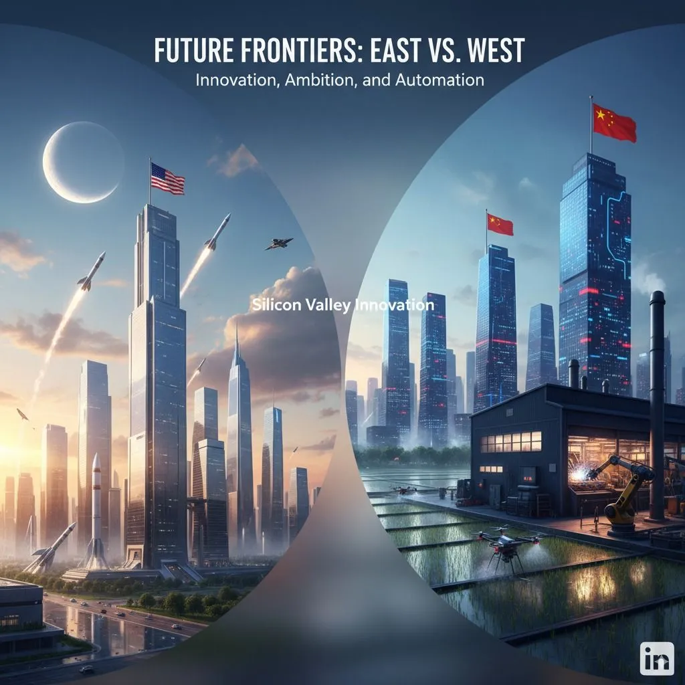

China is betting on applied AI, not AGI
Originally posted on LinkedIn, September 15, 2025.
Silicon Valley talks about the future of AI while China deploys it. That difference could determine who leads AI in the years ahead.
Even as investment in the field rises, Beijing is applying the brakes. The National Development and Reform Commission recently warned against "disorderly competition" in AI. The warning points to an effort to reduce waste and direct national resources toward a focused strategy: not maximum compute, but maximum utility.
Instead of betting on a breakthrough in artificial general intelligence, China is investing in applications. Algorithms grade high school exams, predict the weather, run factories without workers, and make agriculture in rural areas more efficient with autonomous tools, robots, and systems. This is a quiet productivity revolution.
Real constraints also shape this approach. Import restrictions on advanced chips make it harder for China to compete directly on models built at a Western scale. But there is also a broader insight: AI can drive economic growth without another moonshot, an attempt to recreate a race like the moon landing in the 1960s.
Rather than competing over who has the most powerful engine, Beijing is encouraging practical, local specialization. Instead of startups raising billions, it is backing open models that let thousands of small businesses build tailored solutions. The government created an $8.4 billion fund specifically for that purpose.
If the bet works, the West may keep chasing AGI, which does not yet exist and may never arrive, while China builds a meaningful competitive advantage through persistence, accumulated knowledge, and a growing gap over the rest of the world.
China is already known for its export strength and ability to manufacture products at massive scale. Leading the applied AI revolution would put it even further ahead in global trade.
M-ai-de in China.
